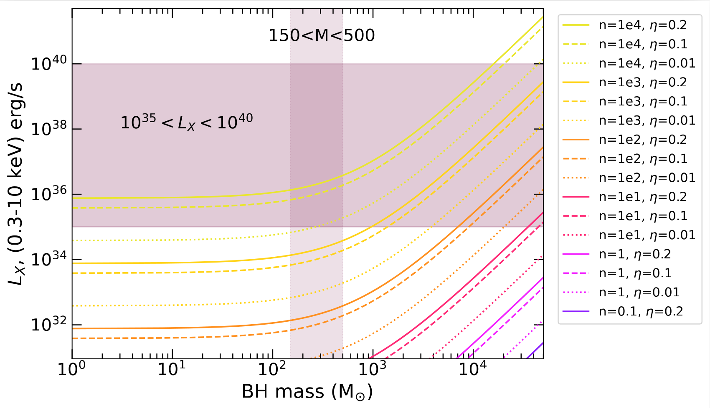
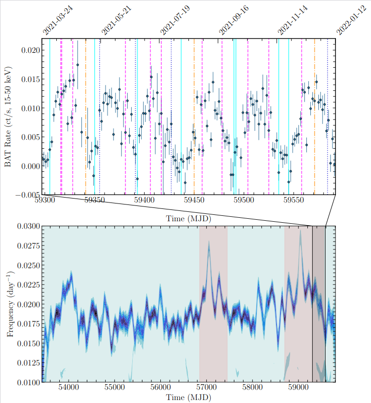

Where are the intermediate mass black holes?
Black holes are some of the most enigmatic systems in the Universe. Despite recent groundbreaking research, we still are missing a key part of the puzzle that could tell us about the history and evolution of our Universe--intermediate mass black holes, which are smaller than the most massive black holes we've ever detected, but larger than typical stellar mass black holes observed in our Galaxy. Our best models for the evolution of our Universe predict there are hundreds of thousands of black holes in galaxies and all across the Universe, and intermediate mass black holes, both in their nature and number can tell us crucial information about our current theories of the history of the Universe. They have a special relationship with dense clusters of stars; due to the dynamic behavior of tens of thousands of gravitationally bound stars, these cluster systems are more likely to produce unique sources like intermediate mass black holes.How do we detect intermediate mass black holes?
Thanks to cutting-edge astronomical observatories like the Chandra X-ray observatory, Hubble Space Telescope, the Vera C. Rubin Observatory, the Southern Astrophysical Research Telescope, the Karl G. Jansky Very Large Array and the Australia Telescope Compact Array, we search for star clusters in optical, and examine them for the presence of intermediate mass black holes using X-ray and radio. Intermediate mass black holes are expected to produce high X-ray luminosities, which can be detected by Chandra, even in more distant galaxies.
How can we be sure our bright X-ray sources are intermediate mass black holes?
Another class of sources which can reach similar X-ray luminosities to intermediate mass black holes are ultraluminous X-ray sources (ULXs), where a lower mass black hole or neutron star, accreting from a companion star, can produce luminosities that exceed the Eddington Limit of the accretor (where the external radiation pressure is balanced by the internal gravitational forces). Sources that exceed their Eddington Limit are thought to be in an unusual accretion state, and likely undergoing more extreme physics than their less luminous counterparts. ULXs have long been associated with star-forming regions of galaxies, but recent studies have shown that there may be a comparable number of ULXs in older globular cluster populations.
The nature of ULXs is likely heterogeneous: due to either neutron star or black hole accretors. Some may even be ultra-compact X-ray binaries, with a degenerate white dwarf donor star and orbital periods on the order of five minutes. By studying both the accretion physics and host environment, we can uncover crucial clues to the binary nature, and can provide far reaching impacts into different sub-fields of astronomy, such as understanding the progenitors to gravitational wave events.
Ultra-compact X-ray binaries
My favorite ever source, RZ2109, is a ULX and black hole candidate located in a globular cluster near NGC 4472. We have analyzed new and archival data in both optical and x-ray, going back to the year 2000. Previous work indicates it is likely to be an ultra compact x-ray binary; the presence of the completely forbidden [OIII] transition line in the optical points towards the binary companion being a white dwarf very early on in its evolutionary phase.
Prior to my thesis work, only a handful of globular cluster ULXs had been studied in any detail, but this changed with my 2019 study which compared the X-ray properties of the nine known sources. My subsequent studies of M87 and NGC 1316 have already doubled the known number of globular cluster ULXs. By increasing these numbers, I am now able to use properties of the sources to carry out pilot population studies of globular clusters that host black holes. We have now discovered 20 GC ULXs, and their X-ray and optical properties can be viewed at this catalog.

What about neutron stars?
My favorite neutron star, SMC X-1, is a high mass X-ray binary situated in the Small Magellenic Cloud. It can reach high X-ray luminosities close to the Eddington Limit, and due to its proximity to us, it can serve as a proxy towards understanding the accretion powering the more distant neutron star ULXs. In the past, I've looked for a link between the change in the super-orbital period (thought to be due to a warped, precessing accretion disk) and the change in the pulse period of the high mass X-ray binary SMC X-1. While the data showed a tentative link between these two observational phenomena, the data at the time was not sufficient to prove a correlation in a statistically compelling manner. However, in 2021, I led a proposal to monitor the source with NICER, and our team will use this data to thoroughly probe the physics of the accretion disk as the super-orbital period changes (see the MOOSE homepage for updates on the monitoring program).
